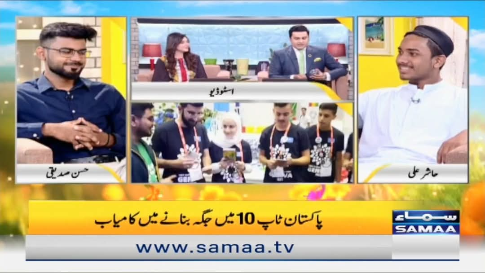
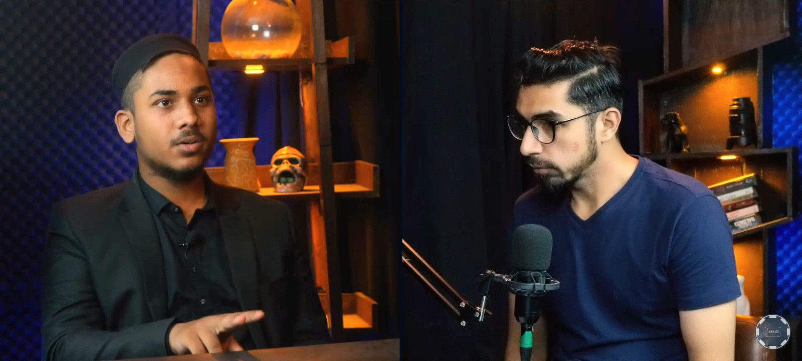
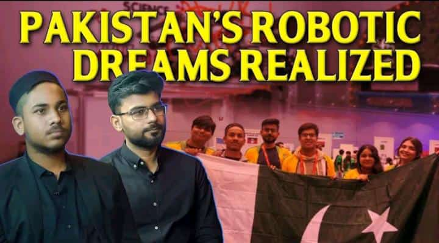

01 / FIELD NOTES
FIRST Global · Short video
Team Pakistan on the world stage
A short moment from the international robotics experience. Watch the original clip here.
Sharing the people, learning, and possibilities behind representing Pakistan at FIRST Global—from a national TV interview to conversations with young people curious about STEM.
The supplied Samaa TV and podcast images are featured below. The folder contains one FIRST Global video, but no separate Samaa TV or podcast video clips yet.
A short moment from the international robotics experience. Watch the original clip here.

02 / ON AIRAt 17, I spoke about Team Pakistan’s Geneva experience, the Carbon Capture robot, and earning a position in the 8th Alliance—sharing a story of Pakistani youth in engineering with a national audience.

03 / IN CONVERSATIONAfter returning from Singapore, I shared the FIRST Global journey and a practical starting point for students exploring robotics, STEM, and “learning by doing.”

The goal of each conversation was simple: make robotics feel less distant, share what I learned along the way, and encourage the next curious student to begin.
The portfolio also notes an Aaj News feature during a robotics judging role, bringing the story from international competition into local STEM events.